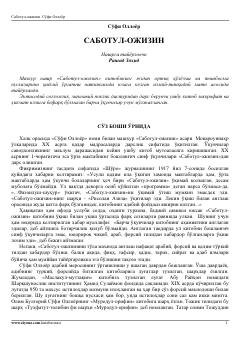

SMovarounnahr madrasalarida asrlar davomida o'qitilgan klassik tasavvufiy va axloqiy asar.
Ushbu asar Movarounnahr madrasalarida asrlar davomida asosiy darslik sifatida o'qitilgan muhim ma'naviy-axloqiy qo'llanmadir. Kitob yuzdan ortiq qo'lyozma va toshbosma nusxalarni qiyosiy o'rganish asosida ilmiy-tanqidiy matn sifatida nashrga tayyorlangan.